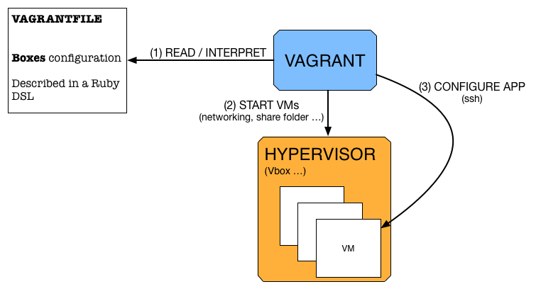

High level overview
Overview

The Vagranffile
Vagrant.configure(2) do |config|
# one vm description
config.vm.define "myvm" do myvm
#
# Reference to a box
#
#
# Shared folder
#
#
# Networking
#
#
# Provisioning
#
#
end
end
One example
Vagrant.configure("2") do |config|
config.vm.define "wordpress" do |wordpress|
wordpress.vm.box = "wheezy64"
wordpress.vm.box_url = "https://vagrant.irisa.fr/boxes/debian-wheezy-x64-puppet_3.0.1.box"
wordpress.vm.network :private_network, ip: "192.168.100.101"
wordpress.vm.provider :virtualbox do |v|
v.customize ["modifyvm", :id, "--memory", 1024]
v.customize ["modifyvm", :id, "--cpus", "1"]
end
wordpress.vm.provision :puppet do |puppet|
puppet.manifests_path = "puppet/manifests"
puppet.manifest_file = "wordpress.pp"
puppet.module_path = "puppet/modules"
end
end
end
Demo
vagrant up wordpress
http://192.168.100.101Add a box to the local repository
# Add a box
vagrant box add irisa/ubuntu1410 https://vagrant.irisa.fr/boxes/irisa_ubuntu-14.10_puppet-3.6.1.box
# What can be done on boxes
vagrant box
Quickstart
Initialisation :
vagrant init irisa/ubuntu1410
# Or put the following in a Vagrantfile
Vagrant.configure(2) do |config|
config.vm.box = "irisa/ubuntu1410"
config.vm.box_url = "https://vagrant.irisa.fr/boxes/irisa_ubuntu-14.10_puppet-3.6.1.box"
end
vagrant up
vagrant suspend
vagrant resume
vagrant halt
vagrant up
vagrant destroy
Set the hostname
# initialize a new project on a previously downloaded box
vagrant init irisa/ubuntu1410
# Or put the following in a Vagrantfile
Vagrant.configure(2) do |config|
config.vm.box = "irisa/ubuntu1410"
config.vm.box_url = "https://vagrant.irisa.fr/boxes/irisa_ubuntu-14.10_puppet-3.6.1.box"
config.vm.hostname = "myserver"
end
vagrant reload
config.vm namespace.
Provision your VMs
- File
- Shell
- Puppet
- ...
File provisioning = upload file or directory on node
# In the Vagrantfile
config.vm.provision "file", source: "Vagrantfile", destination: "Vagrantfile"
vagrant provision
vagrant up.
Shell provisioning = execute script on node
config.vm.provision "shell", inline: "echo Hello Vagrant"
# Same as
config.vm.provision "shell", inline: "echo $1 $2", args: "Hello Vagrant"
# Same as
config.vm.provision "shell", inline: "echo $1 $2", args: ["Hello", "Vagrant"]
# Same as
config.vm.provision "shell" do |s|
s.inline = "echo $1 $2"
s.args = ["Hello", "Vagrant"]
end
## From a shell script
config.vm.provision "shell", path: "script.sh"
## From a remote shell script
config.vm.provision "shell", path: "https://example.com/provisioner.sh"
Puppet provisioning = run puppet apply on node
config.vm.provision :puppet do |puppet|
puppet.manifests_path = "puppet/manifests"
puppet.manifest_file = "wordpress.pp"
puppet.module_path = "puppet/modules"
end
Forward a port
config.vm.network "forwarded_port", guest: 80, host: 8000
config.vm.provision "shell", inline: "apt-get update && apt-get -y install apache2"
Give the VMs static IPs
config.vm.network "private_network", ip: "192.168.2.2"
config.vm.network "private_network", ip: "172.16.2.2"
config.vm.network "forwarded_port", guest: 80, host: 8000, guest_ip: 192.168.2.2, auto_corret :true
config.vm.network "private_network", ip: "192.168.2.2"
config.vm.network "private_network", ip: "172.16.2.2"
Change the size of the VM
controller.vm.provider "virtualbox" do |v|
v.memory = 2048
v.cpus = 2
end
Work with multiple VMs
NSERVICES = 2
Vagrant.configure(VAGRANTFILE_API_VERSION) do |config|
config.vm.define "controller" do |controller|
config.vm.box = "ginflow"
controller.vm.hostname = "controller"
controller.vm.network :private_network, ip: "192.168.50.2"
end
(0..NSERVICES - 1).each do |i|
config.vm.define "service#{i}" do |service|
service.vm.box = "ginflow"
service.vm.hostname = "service#{i}"
service.vm.network :private_network, ip: "192.168.50.1#{i}"
end
end
Don't Repeat Yourself
# -*- mode: ruby -*-
# vi: set ft=ruby :
#
require 'yaml'
config = YAML::load_file(File.join(File.dirname(__FILE__), "myenv.yml"))
# Vagrantfile API/syntax version. Don't touch unless you know what you're doing!
VAGRANTFILE_API_VERSION = "2"
# Number of machines that will host the services
NSERVICES = 2
# HOCL_ROOT must point to the root of the project source
HOCL_ROOT = config["hocl_root"]
# HOCL_ROOT must point to the root of the api project source
HOCL_API_ROOT = File.join(File.dirname(__FILE__),"hocl-wms-api")
# The following should be fine
hocl_dist_path = File.join(HOCL_ROOT, "target/dist/hocl-wf-distribution/hocl-wf")
Vagrant.configure(VAGRANTFILE_API_VERSION) do |config|
config.vm.box = "ginflow"
config.vm.synced_folder "#{HOCL_API_ROOT}/builds", "/share/builds"
config.vm.synced_folder "#{hocl_dist_path}", "/share/hocl-dist"
config.vm.synced_folder "activemq", "/share/activemq"
config.vm.synced_folder "data", "/share/data"
# controller host is composed of the following components:
# * the api (rails)
# * the compiler service (redis-server + sidekiq)
# * the log service
config.vm.define "controller" do |controller|
controller.vm.hostname = "controller"
controller.vm.network :private_network, ip: "192.168.50.2"
controller.vm.provider "virtualbox" do |v|
v.memory = 2048
v.cpus = 2
end
end
# Service nodes host hocl wrapper to real services
(0..NSERVICES - 1).each do |i|
config.vm.define "service#{i}" do |service|
service.vm.hostname = "service#{i}"
service.vm.network :private_network, ip: "192.168.50.1#{i}"
service.vm.provider "virtualbox" do |v|
v.memory = 512
end
end
end
end
Save and publish
vagrant package --output mabox
# test
vagrant box add mabox mabox.box
# create a new project and up
vagrant init mabox && vagrant up
Learn by doing
vagrant up should start a VM with
docker.ioinside- the remote api enabled
The three following commands should work :
vagrant up
curl -X POST localhost:4243/images/create?fromImage=ubuntu:latest
curl -X POST -d '{"Image":"ubuntu", "Tag": "latest", "Cmd":"sleep 100"}' -H 'Content-Type: application/json' localhost:4243/containers/create\